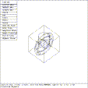
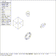

 Figure (eo-stacked): Stacked Primatives
mged> cp arb8 arb8.s
mged> cp ellg ellg.s
mged> cp tgc tgc.s
mged> cp tor tor.s
mged>
Figure (eo-stacked) shows the four primitives; arb8.s, ellg.s, tgc.s, and tor.s. One convention frequently used by experienced modelers is to tack an identifying suffix on the names of the various primitives and objects. Often, a ``.s'' suffix denotes a solid, a ``.r'' denotes a region and a ``.g'' denotes a group (note that this is a different ``.g'' from the ``.g'' suffix used with filenames.).
mged> size 16
mged> sed arb8.s
mged> press sxy
mged> p 3 -3 1
mged> press accept
mged>
Several things happened in the above sequence. The net result is that the solid arb8.s was ``unstacked'' using a Solid Edit so it is more visible. The same sequence of operations will be performed with the other objects to move them to other locations.
 Figure (eo-spread): Primatives After Translation
mged> sed ellg.s
mged> press sxy
mged> p -3 3 1
mged> press accept
mged> sed tgc.s
mged> press sxy
mged> p -3 -3 1
mged> press accept
mged> sed tor.s
mged> press sxy
mged> p 3 3 1
mged> press accept
mged>
The screen should now look like Figure (eo-spread) . The next step is to group the primitives
mged> g a.g tgc.s arb8.s
mged> g b.g ellg.s tor.s
mged> g c.g a.g b.g
mged> B c.g
vectorized in 0 sec
mged> tree c.g
| c.g_____________| a.g_____________| tgc.s
| arb8.s
| b.g_____________| ellg.s
| tor.s
mged>
The group operator (g) generates an object, named by the first argument, which is the union of all objects named in succeeding arguments. Therefore, the object ``a.g'' is composed of the union of ``tgc.s'' and ``arb8.s''. Likewise, the object ``c.g'' is the union of ``a.g'' and ``b.g''. The next command in the above sequence is called the blast command. It is effectively a zap (Z) followed by an edit (e).
The final command is the tree command. It is intended to give the user some idea of the hierarchical structure of an object. It presents a tree laid on it's side. The root is at the left, and the leaves are at the right. A vertical bar denotes a connection at a given level, with the proviso that a vertical bar having a line of underscores coming in from the left represents the start of a particular subtree when read from top down (``ellg.s'' and ``arb8.s'' do not have a common parent).
 Figure (eo-grpath): Object Path With ``tor.s'' as Reference Solid
Figure (eo-grpath): Object Path With ``tor.s'' as Reference Solid
mged> press oill
mged>
Move the cursor up and down the screen until the primitive ``tor.s''
is illuminated, then select
Selecting the solid ``tor.s'' transitions MGED into the OBJ PATH state, and establishes ``tor.s'' as the reference solid for any future editing operations. Note that the name ``tor.s'' is shown in the upper left corner of the display, and on the second status line at the bottom of the display ( Figure (eo-grpath) ).
The OBJ PATH state has little meaning unless there is more than one path or group in the display. One of the following paths may be selected:
c.g/b.g/_MATRIX_/tor.sAlthough the torus primitive has been selected as the reference solid, the position of _MATRIX_ determines the extent of the effects of the edit. The first choice affects only the torus. The second choice affects everything under the group ``b.g'' (the torus and ellipsoid). The third choice affects all of the primitives. Remember though, that in all cases, what is being edited is the Homogeneous Transformation Matrix (thought of as the arc connecting objects), not the underlying solid.c.g/_MATRIX_/b.g/tor.s
_MATRIX_/c.g/b.g/tor.s
{kind=link}
{kind=link}